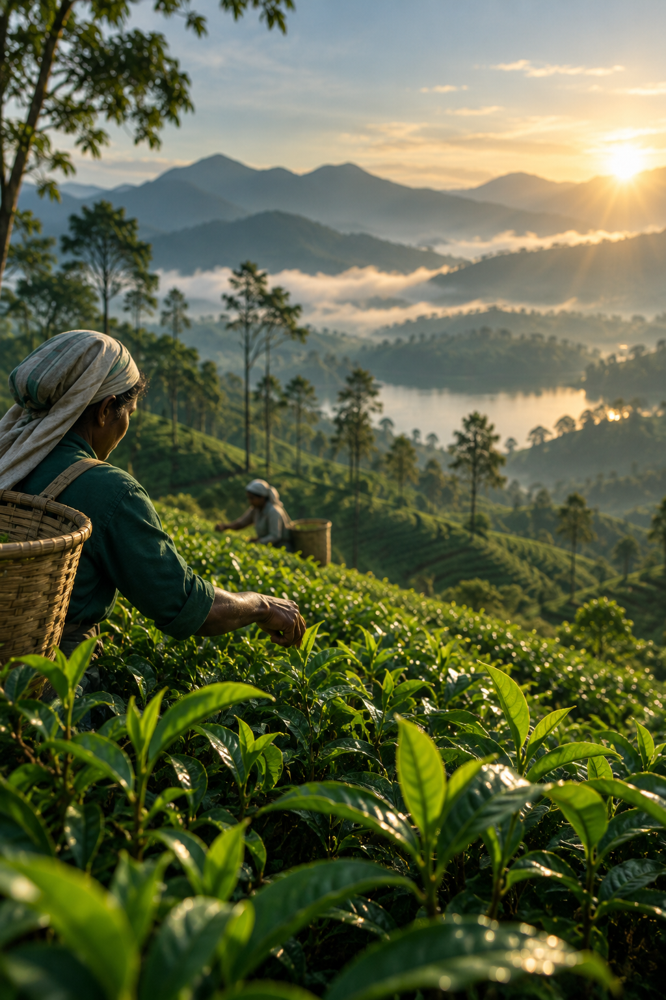
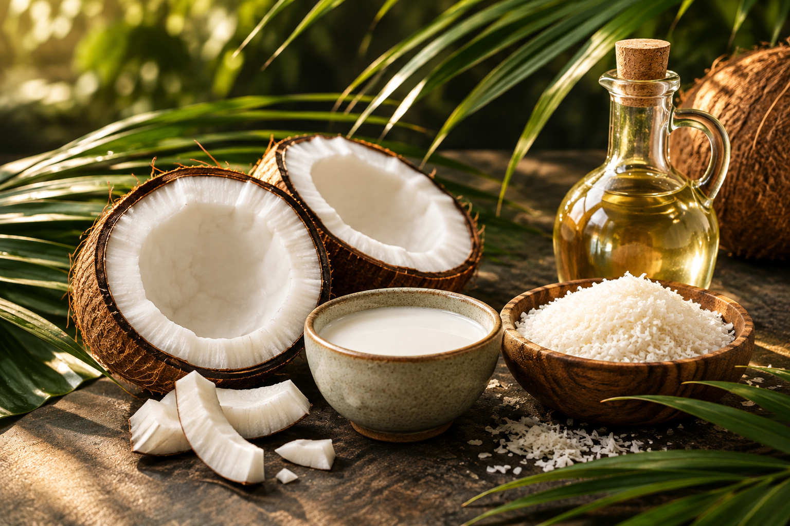

SRI LANKAN ORIGIN · GLOBAL REACH
The Essence of
Ceylon.
Natural products from an extraordinary island — sourced thoughtfully, prepared for global markets, and delivered with the confidence that comes from experience.
CEYLON · CRAFT · CONNECTION
1,000+Shipments
5+Countries
100+Importers
30+Suppliers
8+Years in Business
ABOUT CEYVANA
Rooted in Ceylon.
Connected to the world.
CEYVANA Global (Pvt) Ltd is a Sri Lankan export business built around a simple idea: the best products begin with the right origins and the right relationships.
With more than 8 years in business, we have completed 1,000+ shipments across 5+ countries, working with 100+ importers and a growing network of 30+ suppliers.
Discover our approach →OUR PRODUCTS
Nature’s Finest, from Ceylon.
From iconic Ceylon staples to versatile natural ingredients, our portfolio is designed to evolve with our customers.

05
Natural Ingredients & More
Our range can grow with your requirements — tell us what you are looking for.
Start a conversation →OUR APPROACH
Trade with clarity.
Build for the long term.
We bring together origin knowledge, supplier relationships and export experience so buyers can work with greater confidence.
01
Authentic Origin
We stay close to Sri Lankan producers and the origins behind what we supply.
02
Quality Mindset
We focus on consistency, specifications and dependable product communication.
03
Reliable Execution
More than 1,000 shipments give us practical experience across the export journey.
GLOBAL REACH
From our island
to your market.
Our network already reaches 5+ countries, with 100+ importers and 30+ suppliers connected through our business. We serve importers, distributors, retailers, manufacturers and brands looking for reliable Sri Lankan sourcing.
30+Supplier relationships
100+Importers served
LET'S WORK TOGETHER
Looking for something
from Ceylon?
Tell us what you need, where you are based, and what you are looking for. We will come back with the right next step.